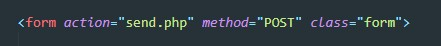
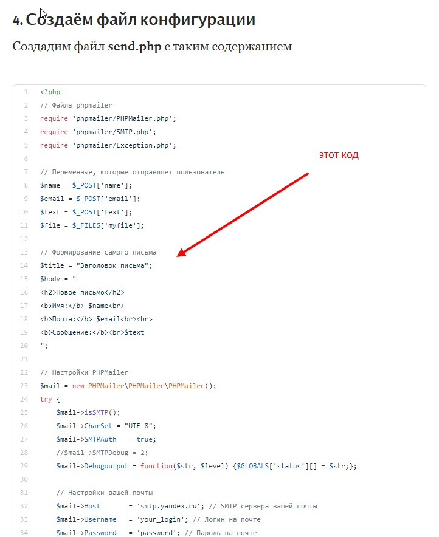
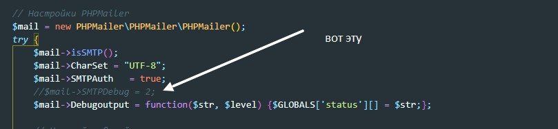
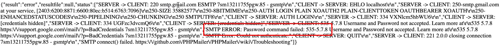
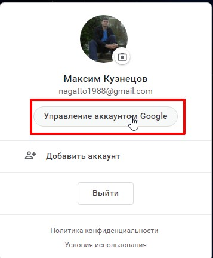
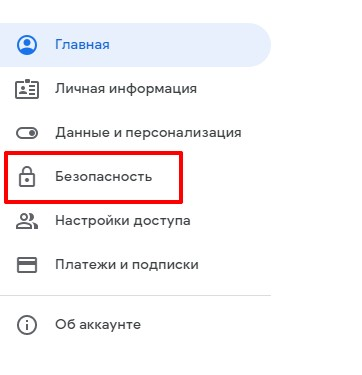
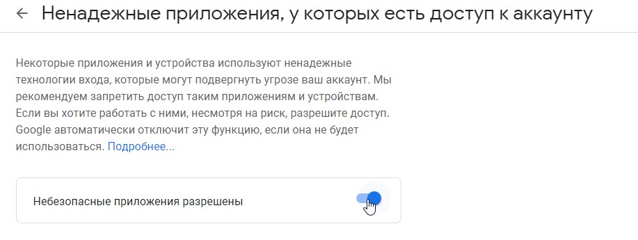
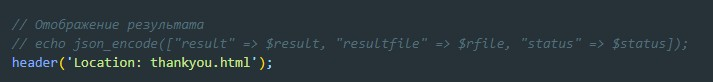

Допустим у нас есть форма
Данные с этой формы должны улететь на почту администратора сайта. Для этого мы будем использовать плагин PHPMailer
Атрибуты формы:
Заходим на GitHub PHPMailer, скачиваем оттуда архив, открываем его и здесь нас интересуют три файла, они находятся в папке src: (Exception, PHPMailer и SMTP)
В папке с проектом создаем новую папку, называем ее phpmailer и в эту папку помещаем эти три файла. Теперь в папке с проектом нам нужно создать файлик, который будет обрабатывать нашу форму. Назовем его send.php. В этот файл мы помещаем код который указан в инструкции
smtp сервер лучше использовать гугловый, яндекс помечает письма как спам если в письме будет содержаться адрес email (а так адрес smtp яндекса - smtp.yandex.ru)
Этот код полезен, если нам нужно подебажить какие либо ошибки, что бы ошибка отображалась развернуто, то необходимо ракоментировать одну строчку:
При отправке формы мы можем получить вот такую ошибку
Эта ошибка вызвана тем что google не разрешает роботам использовать свою почту, для исправления заходим в настройки гугл акаунта
Переходим в настройки безопасности
ищем раздел "Ненадежные приложения, у которых есть доступ к аккаунту"
и включаем разрешение Небезопасным приложениям
После этого письмо отправится как нужно
Конечно же пользователю не нужно видеть лог с результатом отправки письма, поэтому мы сделаем так что бы после отправки письма, пользователя перебрасывало на страницу с благодарностью.
Создаем страницу html добавляем туда верстку. Допустим мы назвали этот файл - thankyou.html
Теперь вместо echo мы должны вставить вот такой код:
